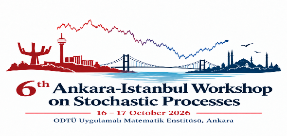

16–17 October 2026 · Ankara, Türkiye
6th Ankara-Istanbul Workshop on Stochastic Processes
Institute of Applied Mathematics
Middle East Technical University (METU)
A two-day scientific meeting for researchers working in stochastic processes and their applications, with research talks, open-problem discussions, and time for new collaborations.
—
days until the workshop
About
Ideas, open problems, and collaboration
The workshop will bring together leading researchers and scholars working in stochastic processes and their applications. Its aim is to present recent advances, exchange ideas, discuss current research challenges, and foster new scientific collaborations.
The meeting is intentionally designed to combine formal research presentations with informal mathematical interaction, giving participants time to discuss open problems and explore potential solutions together.
Format
A workshop built for mathematical conversation
The structure follows the format described in the workshop invitation.
Research talks
Lectures and research presentations across the morning and afternoon sessions.
Open problems
Informal desk-and-board discussions focused on current questions and unresolved problems.
Brainstorming
Dedicated time to exchange ideas, test possible approaches, and identify promising directions.
Collaboration
A setting intended to encourage new scientific collaborations and future joint work.
Invited Speakers
Speaker announcements
Invited speaker names, affiliations, and talk titles can be added here as confirmations are finalized.
Program
Scientific program
The detailed timetable will be posted after speaker confirmations and scheduling are completed.
Friday · 16 October
Day 1
- Morning research talks
- Afternoon research talks
- Open-problem desk & board session
- Brainstorming and collaboration time
Saturday · 17 October
Day 2
- Morning research talks
- Afternoon research talks
- Open-problem desk & board session
- Closing discussion and next steps
Venue
Middle East Technical University
Institute of Applied Mathematics
Middle East Technical University (METU)
Ankara, Türkiye
Practical information on rooms, campus access, accommodation, and local transportation can be added here as arrangements are finalized.
METU
Institute of Applied Mathematics
Ankara · Türkiye
Organizing Committee
Workshop organizers
CVA
Ceren Vardar Acar
Middle East Technical University
MÇ
Mine Çağlar
Organizing Committee
For invited speakers
Travel and accommodation support
The workshop will cover accommodation and/or travel expenses for invited speakers in accordance with the organizational arrangements. Specific details will be communicated directly to participants.
Contact
Questions about the workshop?
For scientific program and practical arrangements, please contact the organizing committee.